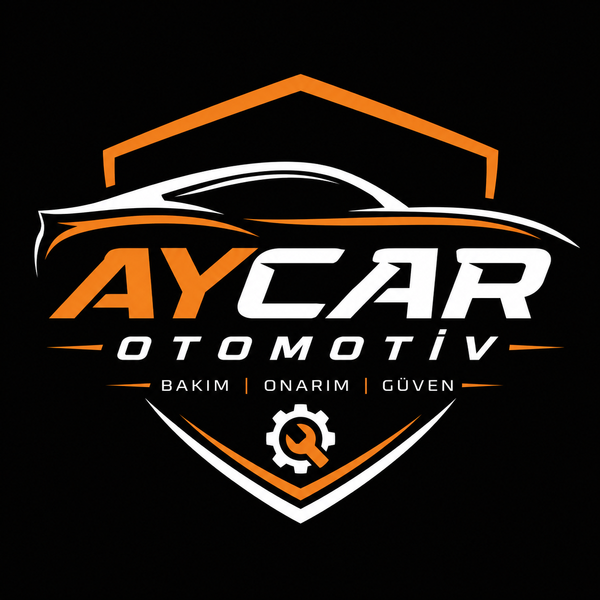
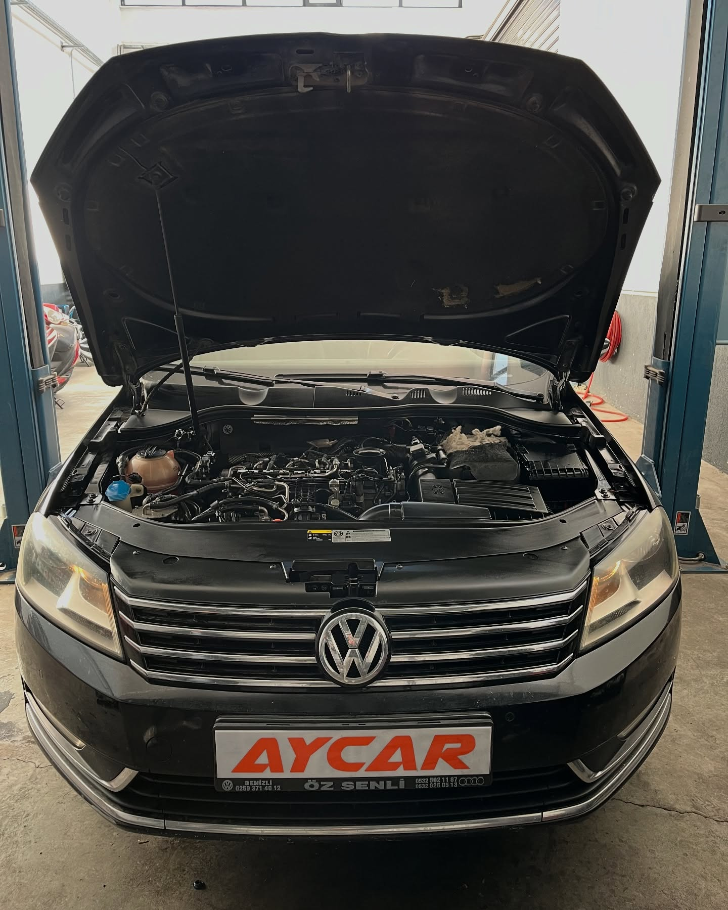
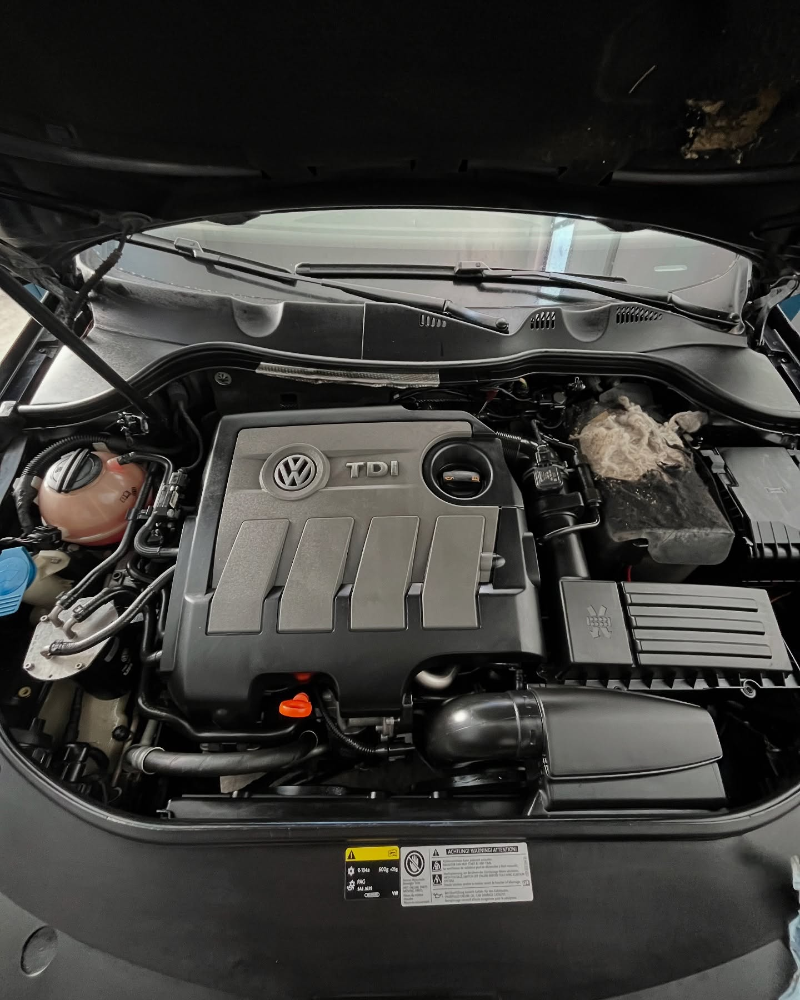
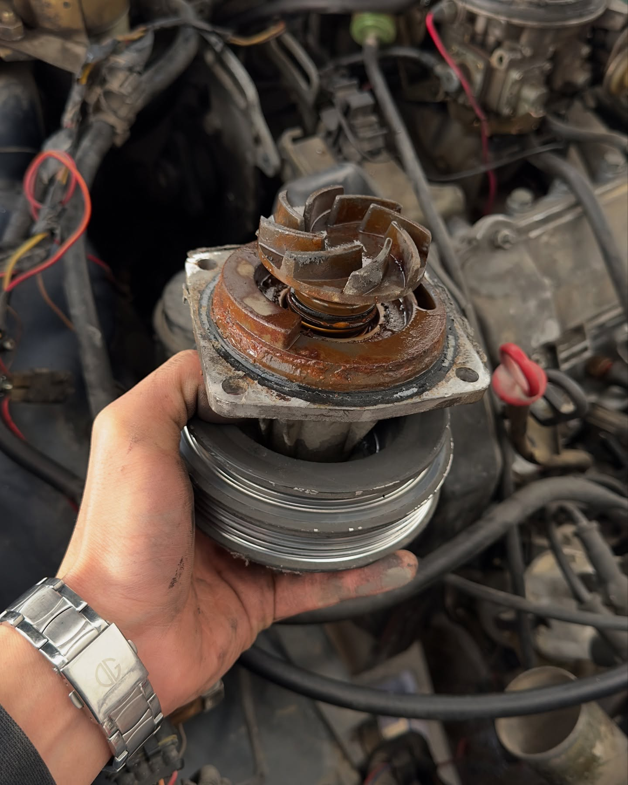
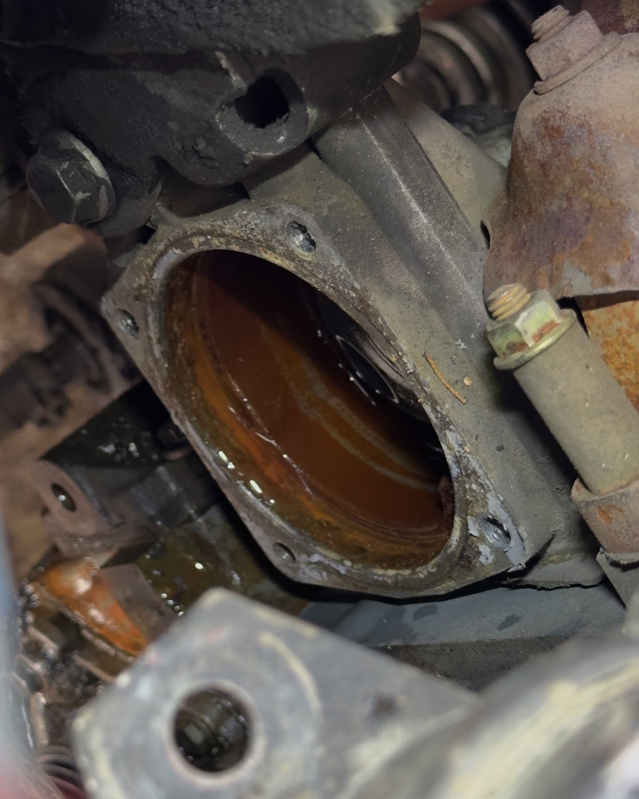
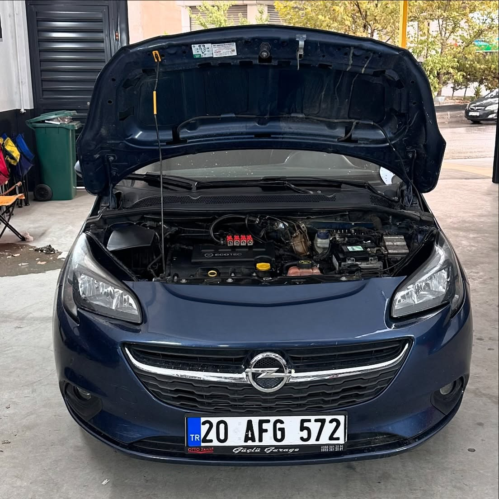
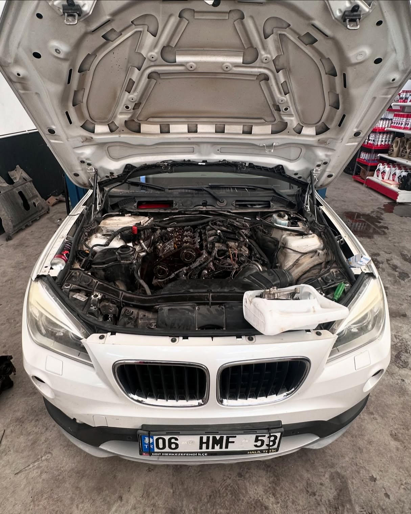
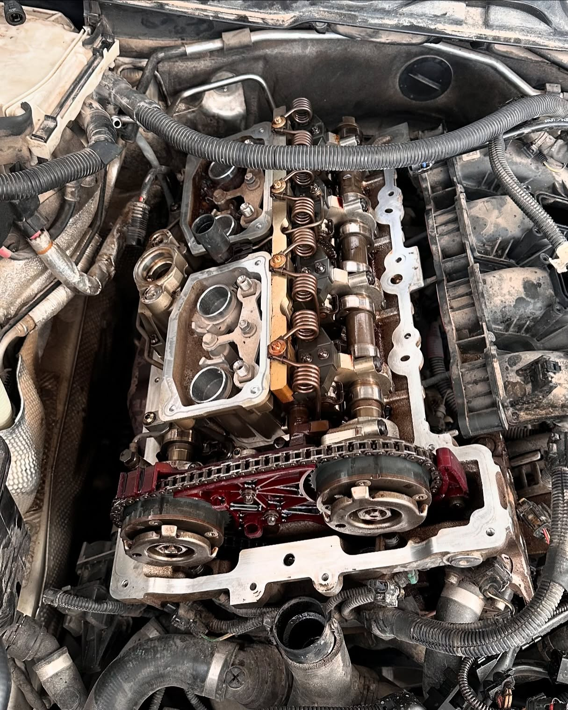
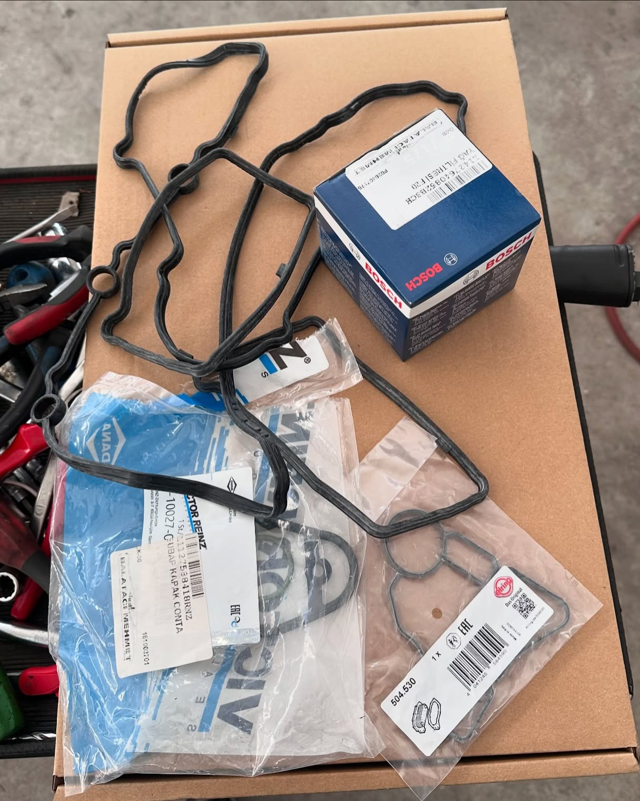
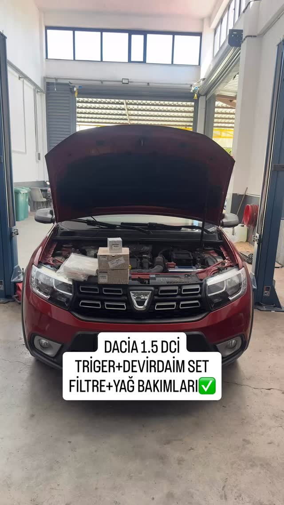

Periyodik Bakım
Yağ, filtre ve genel bakım kontrolleri.

0507 087 8345Motor, mekanik bakım ve arıza onarımında güvenilir hizmet.
Yağ, filtre ve genel bakım kontrolleri.
Motor arızalarının kontrolü ve mekanik onarımı.
Triger sistemi ve ilgili parçaların değişimi.
Soğutma sistemi ve devirdaim işlemleri.
Balata, disk ve fren bakım-onarımı.
Debriyaj sistemi bakım ve parça değişimi.
Mekanik problemlerin doğru teşhisi.
Motor yağı ve filtre değişimi.
Genel mekanik bakım ve onarım işlemleri.









Telefon / WhatsApp: 0507 087 8345
Adres: Sümer Mahallesi, 90. Sokak No:5, 20020 Merkezefendi / Denizli
Çalışma saatleri: Pazartesi–Cumartesi 09:00–18:30
Instagram: @hulusiaydin20